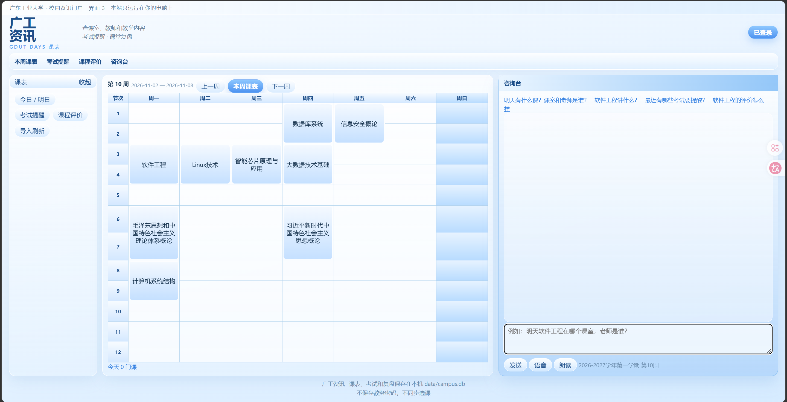

| 性格 | 沉稳细致，喜欢追根究底 |
| 擅长 | Python、SQLite、Linux 部署 |
| 分工 | 智能体对话循环、MCP 工具层、数据库与检索、教务接口、上线部署 |
| 性格 | 开朗主动，注重用户体验 |
| 擅长 | HTML/CSS/JS、接口联调、测试 |
| 分工 | 单页前端、账号与教务接入联调、单元测试 |
面向广工学生的校园知识咨询智能体：用中文对话完成课表、考试、复盘、评价、成绩与公开课推荐。所有事实性回答必须来自工具查询的真实数据。
| 时间 | 课程 | 教师 | 课室 | 教学内容 |
|---|---|---|---|---|
| 08:30-10:05 | 软件工程 | 李老师 | 教3-201 | 用例建模 |
| 10:25-12:00 | 操作系统 | 王老师 | 实验2-501 | 进程调度 |
| 14:00-15:35 | 数据库原理 | 陈老师 | 教1-103 | 事务与锁 |
没配模型密钥也能回答：自动降级为关键词路由；模型接口失败时如实说明，绝不把猜测当课表。
| 课程 | 时间 | 地点 | 还有 | 状态 |
|---|---|---|---|---|
| 软件工程 | 2026-11-12 19:00 | 教3-201 | 4 天 | 该提醒了 |
| 操作系统 | 2026-12-02 09:00 | 实验2-501 | 24 天 | 先记在日历上 |
| 课程 | 项目 | 百分制 |
|---|---|---|
| 操作系统 | 期中 | 68.5 |
| 软件工程 | 总评 | 72.0 |
| 课程 | UP主 | 播放 | 链接 |
|---|---|---|---|
| 操作系统·进程调度 | 某UP主 | 12.3万 | https://… |
亮点：仅用 Python 3.10+ 标准库（零第三方依赖）；网页 / 命令行 / 外部智能体客户端共用同一套 MCP 工具；模型故障时核心查询不中断。
| 模块 | 核心需求（已实现并部署） | 明确不做 |
|---|---|---|
| 账号与数据 | 注册/登录（PBKDF2 哈希）、教务登录导入、多用户严格隔离 | 不保存教务密码 |
| 课表 | CSV/JSON/教务三种导入；今天/明天/本周/全部查询；看板翻周 | 不做选课、抢课 |
| 考试与复盘 | 提醒窗口标注、补记考试、复盘记录与检索 | — |
| 评价与成绩 | 按课程/教师双维度评价；教务成绩导入 + 百分制分析 | 不允许手记成绩 |
| 问答 | 校园咨询 + 每门课独立课程问答；B 站推荐；语音输入与朗读；无密钥兜底 | 不调用日在广工小程序 |
验收标准共 14 条（A1～A14），全部对应已实现能力，文档里每条都写明验证方式——不画大饼。
| 迭代 | 时间 | 内容 |
|---|---|---|
| v0.1 | 10-26 ～ 11-01 | 痛点调研、数据表设计、课表解析（CSV/JSON/周次表达式） |
| v0.2 | 11-02 ～ 11-05 | 16 个工具、MCP 服务与客户端、Agent 对话循环、BM25 检索、长期记忆 |
| v0.3 | 11-06 ～ 11-07 | 单页前端、注册登录、教务导入课表与成绩、语音 |
| v1.0 | 11-08 | 17 项单元测试、示例课表、公网部署 + 开机自启 |
质量保障：17 项单元测试覆盖周次换算、提醒窗口、导入回写、多用户隔离、HTTP 对话、成绩分析等；部署用 systemd（Restart=always），崩溃自愈、开机自启。
试用地址：http://8.134.98.200:443/（测试机 443 端口，系统用户 + systemd 开机自启）

体验路径：打开地址 → 点「登录」载入示例课表（或注册账号导入自己的课表）→ 问「明天有什么课」「最近有哪些考试」→ 切到课程问答选一门课问「这门课在讲什么」。